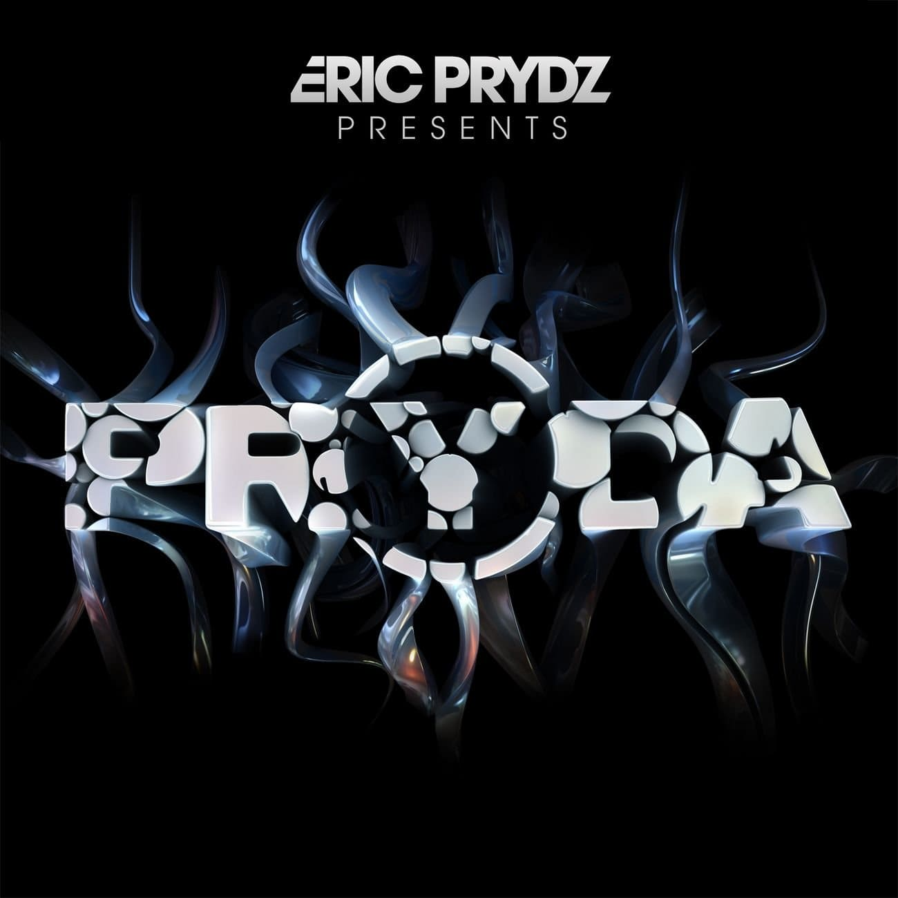

Eric Sheridan Prydz (also known by his aliases Pryda, Tonja Holma and Cirez D) is a Swedish DJ, record producer, and musician. He rose to fame with his 2004 hit single "Call on Me", and saw continued chart success with "Proper Education" in 2007, and "Pjanoo" in 2008. In 2016, he released his debut studio album, Opus. In 2017, he won DJ of the Year at the Electronic Music Awards and was also nominated for Live Act of the Year.
ABOUT

Prydz is perhaps best known for his 2004 hit single "Call on
Me". It topped the UK singles chart for five weeks and was
number one on the German Top 100 for six consecutive weeks.
Although this track made him immensely popular, Prydz has
stopped playing it in his shows in an attempt to distance
himself from it. In some respects he has succeeded, and with
his newer songs, Prydz has gained recognition from both
underground and mainstream fans. In 2006, he released a
remixed version of Pink Floyd's "Another Brick in the Wall,
Part 2", titled "Proper Education". In 2008, Prydz released
the critically acclaimed single "Pjanoo", which topped the UK
Dance Chart.
Together with Axwell, Sebastian Ingrosso and Steve Angello,
Prydz formed a group of DJs that informally referred to
themselves as the Swedish House Mafia. When the group with the
same name officially formed in late 2008, Prydz decided not to
join his friends. He has collaborated with Axwell under the
name Axer and with Angello as A&P Project.
In 2009, Prydz released "Miami to Atlanta", where the "Pryda
snare" was first used. The Pryda snare is a popular technique
in house and trance music consisting of using a compressed and
sustained snare sample at the end of a bar. Commonly used to
mark progressions in a song structure, it has been widely
sampled in the electronic dance music world, notably by
producers such as Martin Garrix, Dimitri Vegas & Like Mike,
and W&W. On 21 May 2012, Prydz released his debut artist
album, Eric Prydz Presents Pryda, as a 3-disc album on Virgin
Records.
The Ministry of Sound club in London hosted the launch of Eric
Prydz Presents Pryda on 14 April 2012, where Prydz played some
of the tracks from the album. His 2013 Essential Mix was named
Essential Mix of the Year by Pete Tong.
2014 was the 10th year of Prydz's label “Pryda Recordings”,
and as a result, On 4 May 2015, Prydz announced PR(10)DA, a
collection of unreleased tracks from January 2004 to December
2014. PR(10)DA was released over three EPs, leading up to an
album release in February 2016.
On 19 May 2014, Prydz announced via social media the third
installment of his concert, Eric Prydz in Concert, titled EPIC
3.0. Promising the 'world's largest indoor hologram', new
music, and new visuals, the show was to be held at Madison
Square Garden during the Fall. Prydz performed his EPIC 3.0
show on 27 September 2014, playing a large range of new and
unreleased material. The show incorporated a 20m, 4K hologram,
and 32 lasers.
On 4 July 2015, Prydz was the first DJ with a set featured as
a "One Mix" on Beats 1, the worldwide radio station on Apple
Music. On 5 February 2016, Prydz released his debut studio
album Opus.
To celebrate the 15th anniversary of the Prydz “Pryda” alias,
On 10 April 2019 Eric announced the release of PR(15)DA, a
collection of 27 songs that were (again) released over three
Eps.